PyCon US 2024 Recap¶
Table of Contents¶
Intro¶
Disclaimer: the content of this post is a reflection of my career journey and not specific to my work at JPMorgan Chase & Co.
Thursday¶
Sightseeing¶
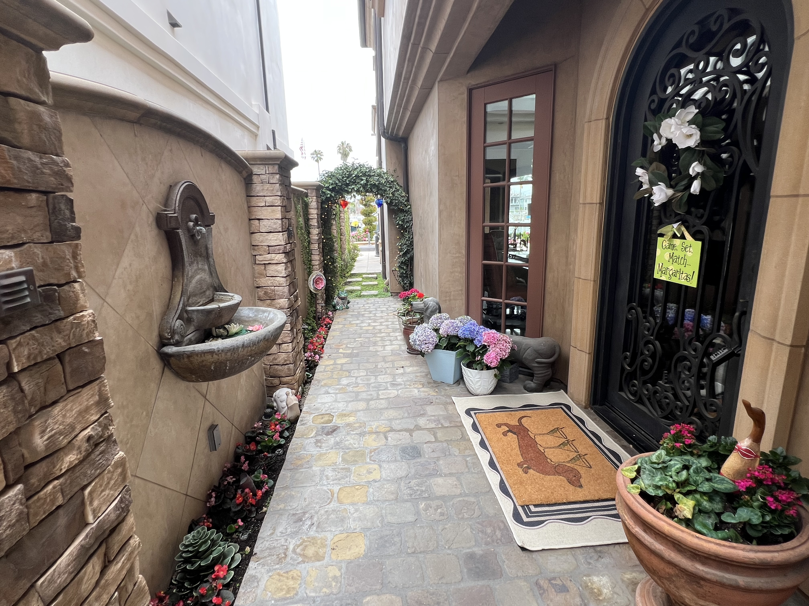
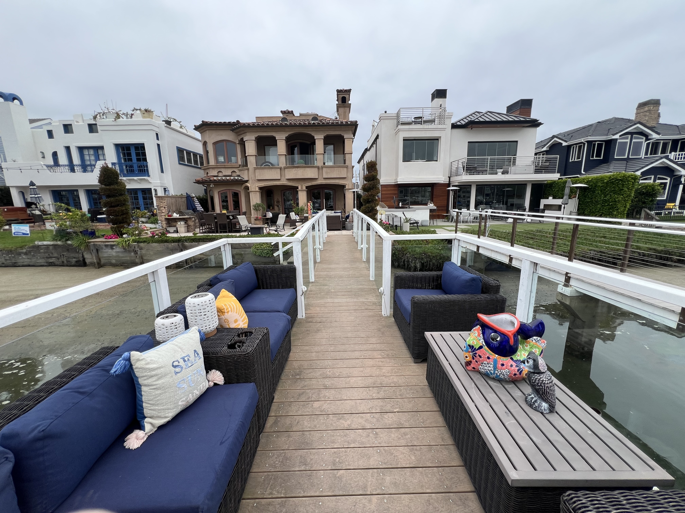
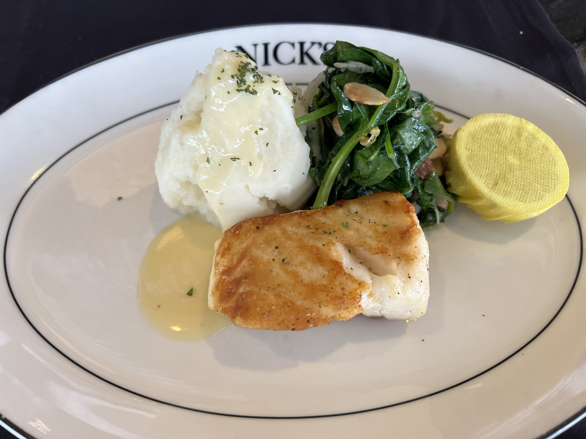
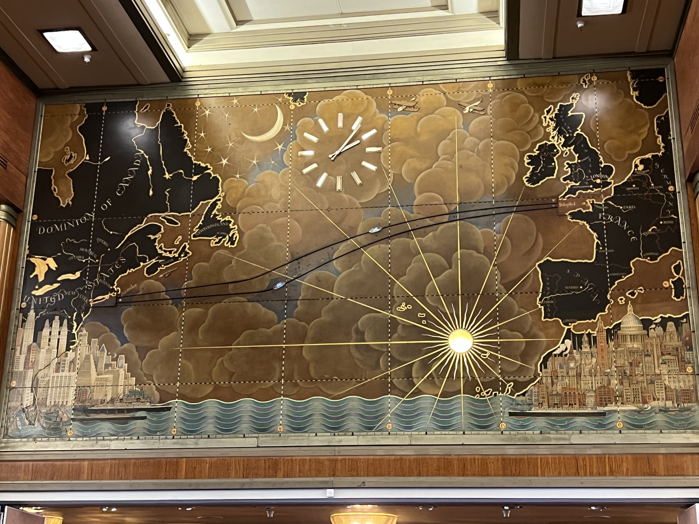
Opening Reception at the Expo Hall¶
Expo Hall Booths Thursday and Friday¶
Friday¶
Welcome¶
PSF Welcome¶
Lin Qiao Keynote¶
Catch Up With Anthony¶
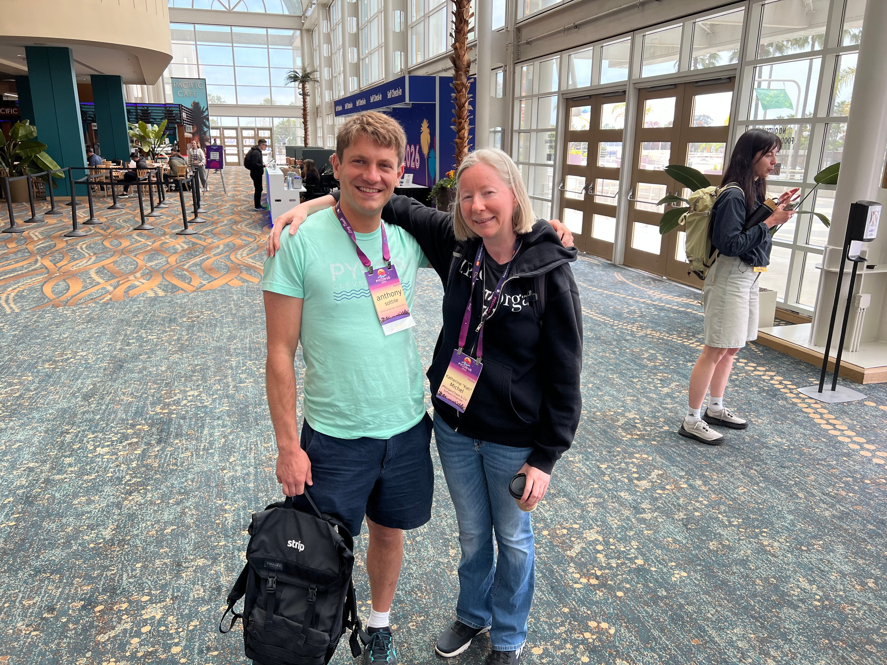
Saturday¶
Pablo Galindo Salgado Keynote¶
PSF Members Luncheon¶
Ned Lightning Talk¶
PyLadies Auction¶
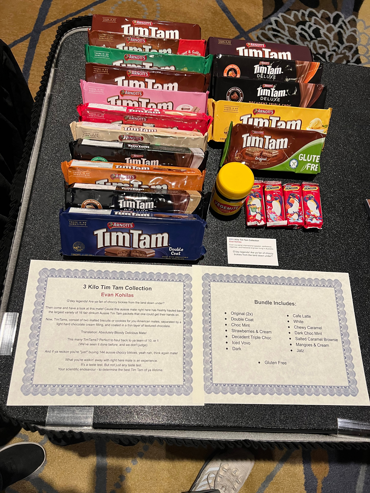
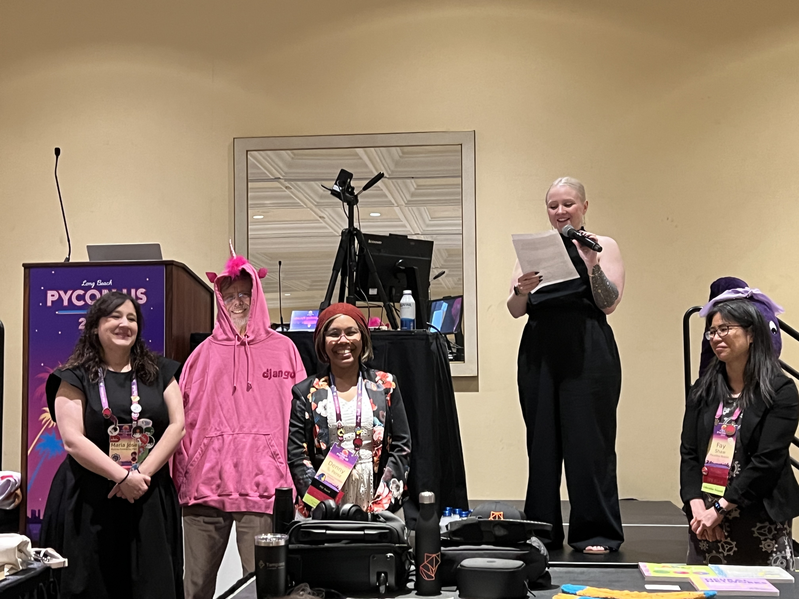
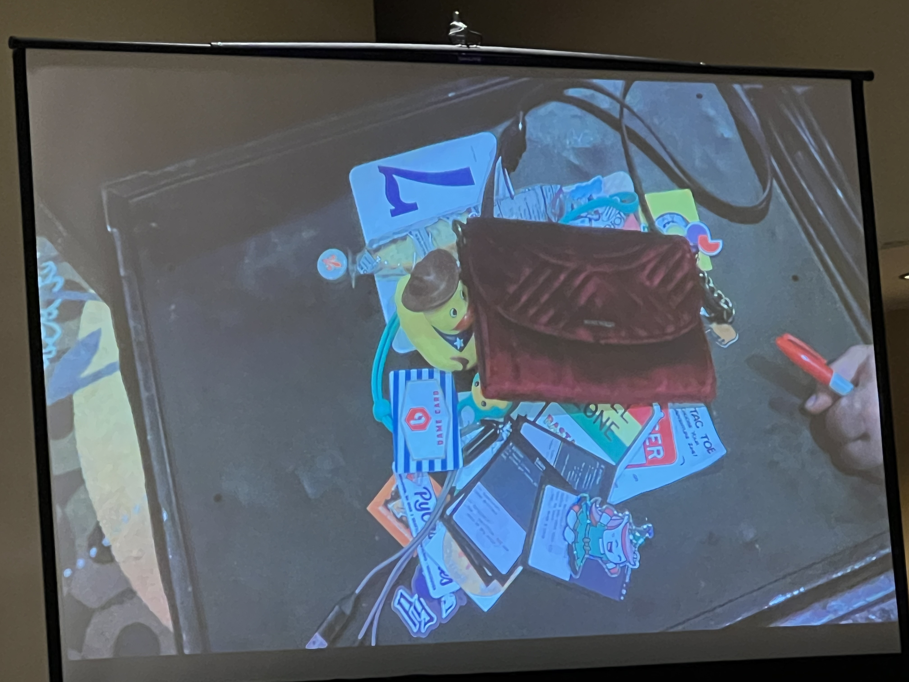
Sunday¶
Marina and Beach¶
Placeholder
Amanda Casari Keynote¶
Python Software Foundation Security Engineers Update¶
Posters¶
PyLadies Lunch¶
Rachel Calhoun and Tim Schilling Keynote¶
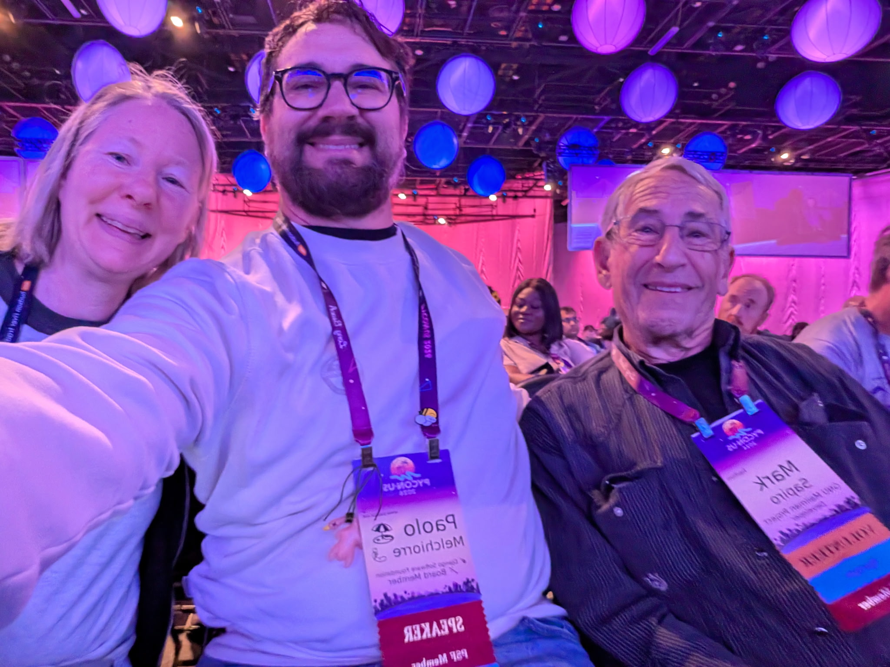
Steering Council Panel¶
Python Software Foundation Update¶
Ice Cream Selfie¶
RevSys After Party¶
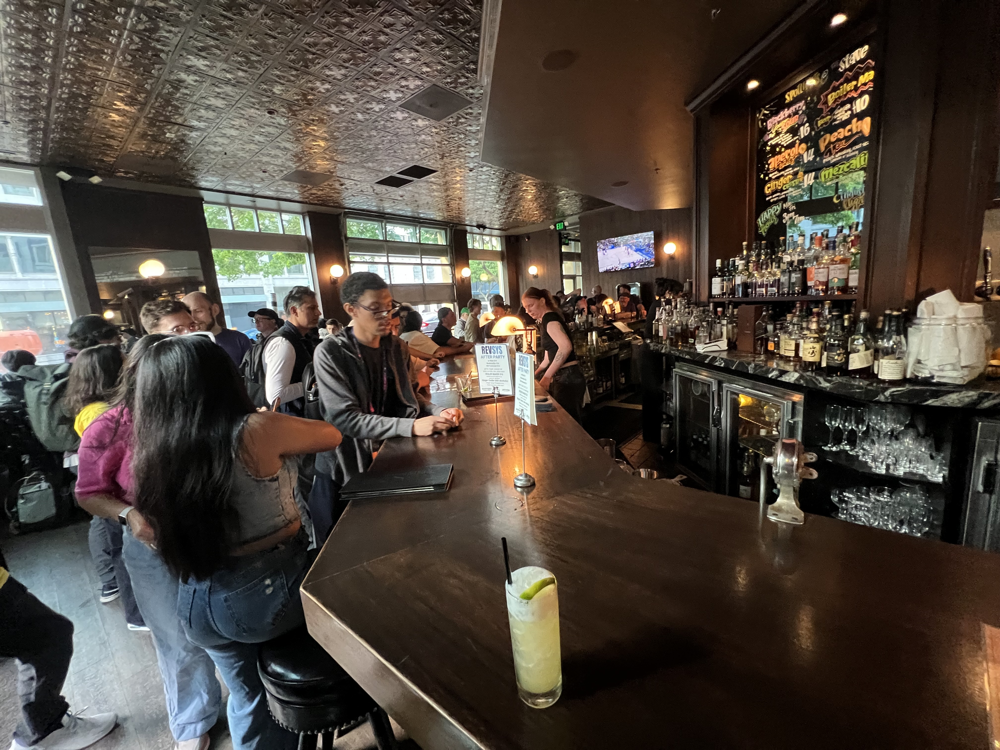
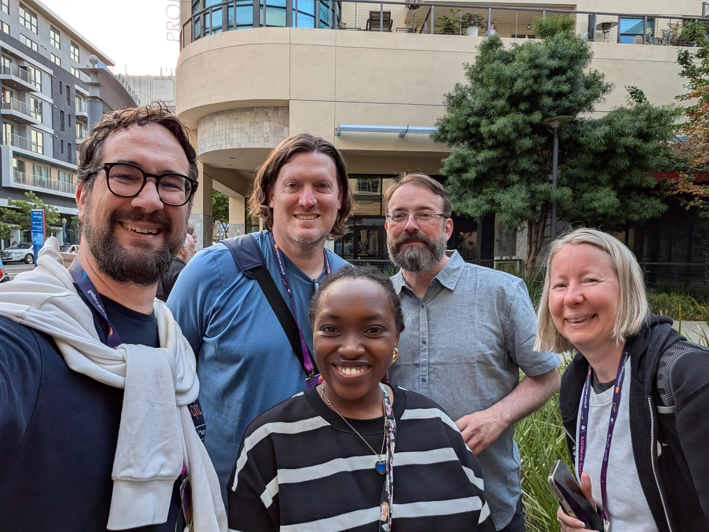